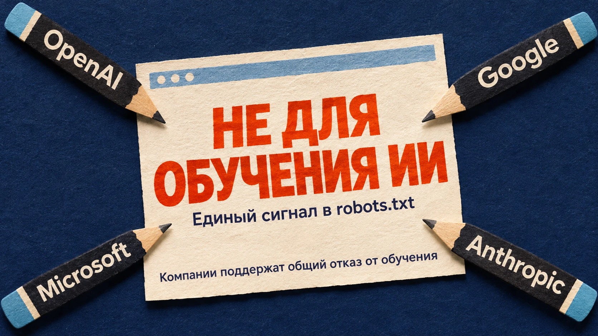
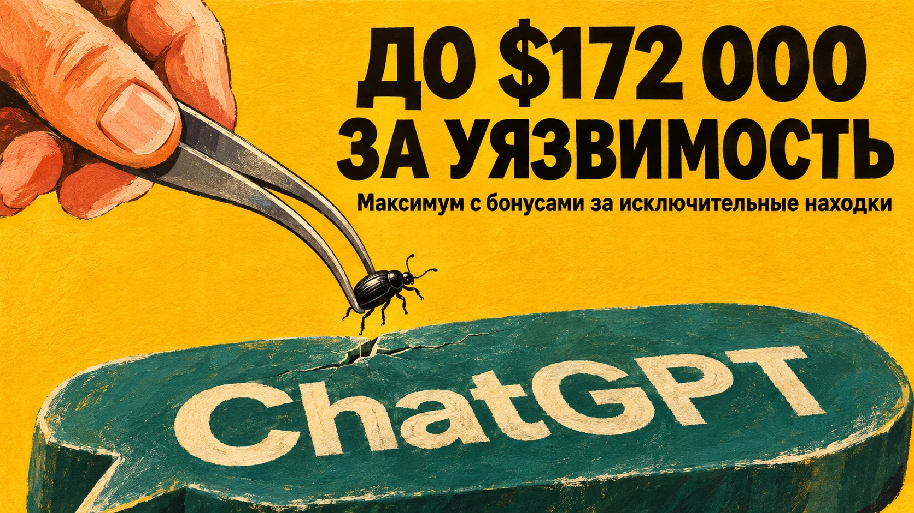

Новости ИИ
Новые модели, исследования, продукты и события индустрии искусственного интеллекта.
7 ноября 2026

Граймс появится в ИИ-фильме, который выйдет в кино 4 декабря
Граймс предоставила внешность и сама записала реплики для героини научно-фантастического ИИ-фильма Gods Don’t Give Gifts. Она участвовала в разработке образа; выход в кинотеатрах США намечен на 4 декабря.

Глава Take-Two: GTA VI делают вручную, а ИИ уже экономит на рекламе
Штраус Зельник вновь назвал GTA ручной работой и рассказал об ИИ-рекламе мобильных игр: турецкая студия показала ролики примерно по $800 вместо съёмок с актёрами за $25–50 тысяч. Общую экономию Take-Two от ИИ он пока считает относительно небольшой.

Meta добавила в Muse конструктор мини-приложений: достаточно описать задачу
Meta представила Spaces — конструктор мини-приложений внутри Muse: инструменты создаются по описанию в чате, меняются разговором, могут подключаться к сервисам и обновлять данные в фоне.

Thinking Machines выпустила Inkling 2 Small: 594 млрд параметров и обещание открыть веса
Thinking Machines Lab представила Inkling 2 Small с 594 млрд параметров и около 17 млрд активных параметров на токен. Модель уже работает через Tinker; веса под Apache 2.0 пока лишь обещаны после тестирования безопасности.

Google выпустила Gemini Omni 1.2 Flash: 15 секунд видео и правки в переписке
Google DeepMind выпустила Gemini Omni 1.2 Flash для создания 3–15-секундных видеороликов и многошаговых правок в диалоге. Генерация 720p через API стоит $0,07 за секунду; доступ зависит от сервиса и тарифа.
6 ноября 2026

Четыре университета Австралии внедряют ИИ OpenAI: от ChatGPT Edu до робота-родителя
OpenAI расширяет применение ChatGPT Edu и агентных инструментов в университетах Австралии. UNSW охватит более 80 тысяч студентов и сотрудников, La Trobe уже открыл доступ 3500 работников; обучение включает клинические сценарии и роботизированные диалоги.
Meta дала Muse голос и мимику: ИИ-агента теперь можно перебивать
Meta начала развёртывание голосовых разговоров и живых аватаров Muse в США: доступны сотни голосовых вариантов, перебивания, три режима общения и выполнение задач во время диалога.

Skyfall показала ИИ, который разбирает автомобиль на детали по фотографии
Skyfall AI представила SKY-001 — модель, которая по изображению восстанавливает предполагаемую структуру механизма и шаги геометрического построения. Заявленные ускорение и экономия получены в тестах разработчика.

Snowflake прописала ИИ-агентам правила: что считать выручкой и сколько тратить
Snowflake представила Business Ontology для единых определений корпоративных показателей и расширила Cortex AI Gateway для контроля ИИ-агентов, их прав и расходов.

OpenAI покупает Pierre: её инструменты уже работают в Codex
OpenAI объявила о намерении приобрести Pierre Computer Company, чьи библиотеки Trees и Diffs уже используются в Codex. После сделки компания планирует интеграцию Code Storage.
5 ноября 2026

MyHeritage выпустила ИИ-генеалога: он ищет предков и проверяет архивы
MyHeritage представила GAIA — ИИ-агента для поиска предков по историческим документам и архивам с проверяемыми источниками и ручным утверждением изменений в семейном дереве.

OpenAI выпустила Images 2.6: ChatGPT теперь делает ГИФКИ!
OpenAI выпустила Images 2.6: ChatGPT получил создание GIF и более точное редактирование изображений, а API — варианты Flare и Sunburst.

ИИ поручили исправить 100 уязвимостей. Лучший результат — 67,8%
Collinear AI открыла CWE-bench v2: 100 заданий на исправление реальных программных уязвимостей. Gemini 4 Argon получила 67,8% успешных запусков, а пять заданий не решила ни одна из 11 моделей.
4 ноября 2026

3 ноября 2026

OpenAI, Google, Microsoft и Anthropic разрешат сайтам запрещать обучение ИИ
OpenAI, Google, Microsoft и Anthropic договорились поддерживать единый способ отказа от использования материалов сайтов для обучения нейросетей. Владельцам сайтов больше не придётся составлять отдельные запреты для каждой из этих компаний, когда все они внедрят новый механизм.

Codex так разогнал разработку, что OpenAI пришлось создавать новый Git-сервер
Программисты OpenAI стали настолько активно использовать Codex, что прежняя инфраструктура хранения исходного кода начала захлёбываться от нагрузки. Отправка изменений замедлялась, возникали ошибки при объединении кода, а надёжность системы временами падала ниже 90%. 2 ноября OpenAI рассказала о

За взлом ChatGPT теперь платят до $172 тысяч!
OpenAI с 2 ноября существенно увеличила вознаграждения исследователям, которые находят уязвимости в ChatGPT, Codex и API. За критическую ошибку безопасности в одном из основных продуктов компания теперь готова заплатить до $30 тысяч. За исключительную находку базовая награда

Grok Bot взял на себя около 70 часов работы аналитиков за неделю
Внутренний ИИ-агент Data Bot за неделю выполнил задачи, на которые команда аналитиков SpaceXSI потратила бы примерно 70 часов. Эту оценку компания опубликовала 2 ноября в блоге xAI. Data Bot работает на платформе Grok Bot и подключается к корпоративному хранилищу данных.
ИИ-пузырь трещит по швам: акции Intel рухнули на 29%, Alphabet потеряла $500 млрд
30 октября акции Intel обвалились на 28,6%, а технологический индекс Nasdaq Composite потерял 2,86% за одну торговую сессию. Днём раньше акции Alphabet, материнской компании Google, подешевели на 12,6%. Её рыночная капитализация сократилась примерно на 500 миллиардов долларов.

OpenAI пообещала разгружать электросети: в Джорджии — до 1000 МВт
Будущий дата-центр OpenAI в американском штате Джорджия сможет резко снижать потребление электричества во время жары и других периодов высокой нагрузки на электросеть. По соглашению с энергетической компанией Georgia Power предусмотрено сокращение потребляемой мощности до 1000